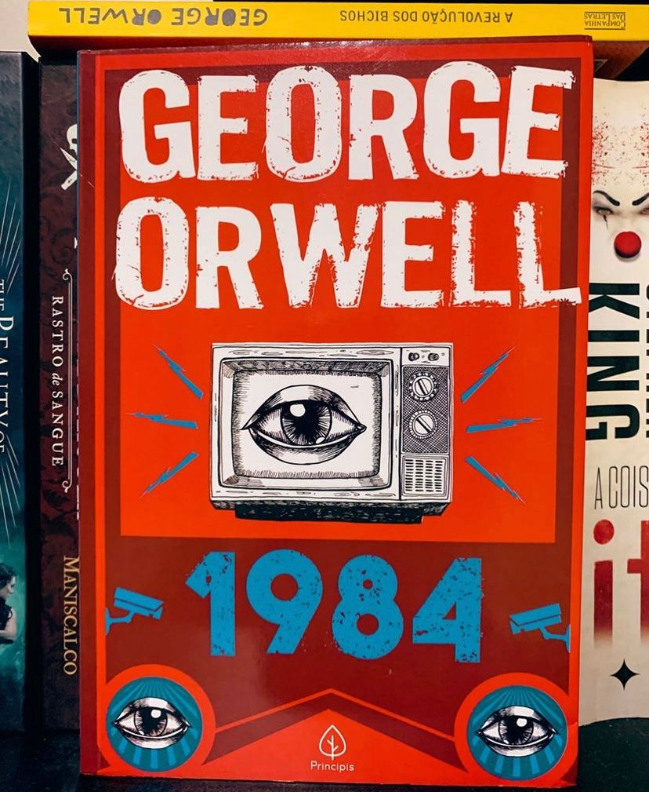

1984
Distopia ? Talvez, não…
Em Londres, cidade localizada no superestado transcontinental da Oceânia, o falsificador de documentos históricos do Ministério da Verdade Winston Smith não suporta o regime totalitário sob o qual vive, mas não faz mais do que encher páginas de seu diário com sua angústia e desalento. Presente em todos os momentos, em todos os lugares e sempre apto a condenar qualquer mínima infração, o Irmão Maior, líder distante e abstrato, é magnânimo e inatingível demais em seu poder. Até que Smith conhece Júlia, funcionária do Departamento de Ficção, e após se apaixonarem clandestinamente um pelo outro, sentem que uma quebra na estrutura social finalmente é possível.
Como explicar 1984? Distopia, Big Brother, autoritarismo, polêmicas, tudo isso faz parte da obra. Escrita por George Owell em 1948 e publicada em 1949 o livro acaba por denunciar o totalitarismo servindo de alerta para o poder que corrompe. Acho importante destacar que aqui a censura é extrema e o governo precisa padronizar seus indivíduos e comportamentos. A individualidade, a originalidade e a liberdade de expressão são considerados “crimes de pensamento”. Tudo é muito pesado, e temos até tortura ! O que não é muito diferente da realidade, não é mesmo ?
E temos também o fator de você estar sempre sendo vigiado, não ter a mínima privacidade, cada passo, cada movimento, cada erro, o nosso Grande Irmão SABE !
A Leitura vale muito a pena, principalmente por abordar temas que são tão atuais ! E talvez seja isso que mais assuste…